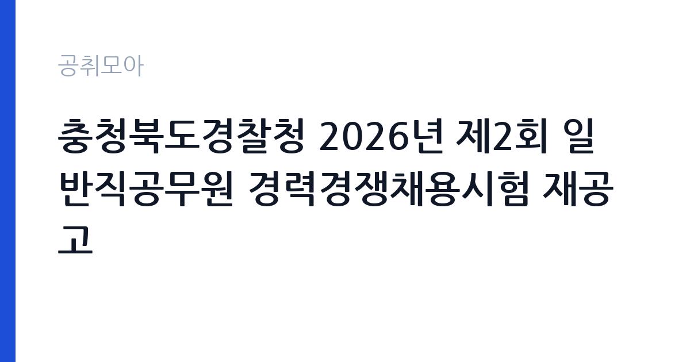

[국가기관] 충청북도경찰청 2026년 제2회 일반직공무원 경력경쟁채용시험 재공고
경찰청 충청북도경찰청 · 충북 · 마감 2026-10-26 (D-8) · 출처 나라일터

한눈에 보는 모집 조건
| 기관 | 경찰청 충청북도경찰청 |
|---|---|
| 공고명 | 충청북도경찰청 2026년 제2회 일반직공무원 경력경쟁채용시험 재공고 |
| 고용형태 | 정규직 |
| 근무지 | 충북 |
| 게시일 | 2026-10-18 |
| 마감일 | 2026-10-26 (D-8) |
지원자격, 이렇게 읽으세요
- 의료기술 7급 1명 보건 8급 1명 운전 9급 4명
- 접수 ~2026-10-26 마감
- 세부 조건은 원문 공고문 확인
경력경쟁채용은 특정 자격이나 경력을 가진 사람을 대상으로 하는 채용입니다. 의료기술 7급은 정신·신체 건강 증진과 지원 업무를, 보건 8급은 심리상담과 검사를 담당합니다. 두 직류 모두 관련 면허나 자격, 상담 경력이 요건으로 제시됩니다. 운전 9급은 차량관리 담당으로, 대형 차량 운전에 필요한 면허 요건을 충족해야 합니다. 공통으로 대한민국 국적과 공무원 임용 결격사유 부재, 응시 연령 요건이 적용됩니다. 자격증과 경력 증명이 서류 단계에서 핵심이므로 원문 공고문의 응시자격표를 먼저 확인하세요.
이 공고의 포인트
이 공고의 매력은 신분입니다. 일반직공무원 경력경쟁채용은 계약직이 아니라 정년이 보장되는 국가공무원 임용입니다. 7급과 8급, 9급으로 직급이 나뉘어 있어 본인의 자격과 경력에 맞는 직급을 선택할 수 있습니다. 운전 9급은 4명을 뽑아 인원이 가장 많고, 상대적으로 진입 문턱이 낮습니다. 근무지가 충북으로 한정되어 있어 충북 거주자에게는 생활 반경을 유지하면서 공무원 신분을 얻을 기회입니다. 재공고인 만큼 1차 응시자들이 이미 빠진 상태라 지원 전략을 세우기 좋습니다.
전형은 어떻게 진행되나
경력경쟁채용시험은 서류전형과 면접시험을 기본으로 하며, 직류에 따라 필기시험이 더해질 수 있습니다. 서류에서는 자격증과 경력의 적합성을 확인하고, 면접에서는 직무 수행 능력과 공직 적합성을 평가합니다. 접수는 2026년 10월 16일부터 26일 오후 6시까지이고, 응시원서 접수 방법과 제출처는 공고문 첨부 파일에 안내되어 있습니다. 시험 일정과 장소는 접수 후 개별 통보되거나 경찰청 공고로 게시됩니다. 재공고이므로 이전 공고와 응시자격이 달라졌는지 반드시 대조해야 합니다.
원문에서 확인한 전형 방식
2026년 제2회 경찰청 일반직공무원 경력경쟁채용시험을 붙임과 같이 재공고하오니 우수 인재의 많은 지원바랍니다. ※ 근무 예정부서가 충청북도경찰청(소속 경찰서 포함)인 직무분야에 한함. ○ 임용분야 및 인원 - 의료기술 7급(정신·신체건강 증진·지원) : 1명 - 보건 8급(심리상담·검사) : 1명 - 운전 9급(차량관리 담당) : 4명 ○ 접수기간 : 2026. 10. 16. ~ 10. 26. 18:00 ○ 응시자격 및 원서접수 방법 등 기타 자세한 사항은 붙임 파일의 공고문 참조
이런 분께 추천해요
- 임상심리·상담 관련 자격을 갖춘 지원자
- 경찰 행정과 심리 지원 업무를 함께 수행하고 싶은 분
- 운전면허 요건을 갖추고 공무원 신분으로 근무하려는 지원자
지원 전 체크리스트
- 직류별 자격 요건과 경력 연차를 충족하는가
- 재공고에서 응시자격이 변경되지 않았는지 확인했는가
- 마감이 10월 26일 오후 6시임을 일정에 반영했는가
- 응시원서 서식과 증빙서류 목록을 확인했는가
모집 일정과 제출 타이밍
접수는 2026년 10월 16일부터 26일 오후 6시까지입니다. 서류전형 결과와 면접 일정은 접수 후 안내되며, 최종합격자는 임용 절차를 거쳐 발령받습니다. 재공고는 일정이 압축되는 경우가 많아, 자격증 사본과 경력증명서를 미리 준비하지 않으면 마감에 쫓깁니다. 임용 후에는 수습 기간과 교육이 이어질 수 있습니다. 시험 일정은 경찰청 사정에 따라 조정될 수 있으므로 충청북도경찰청 공고 페이지를 확인하세요.
직무 이해하기: 국가기관
의료기술 7급은 경찰 조직 내에서 정신·신체 건강 증진과 지원 업무를 맡습니다. 직원의 건강 관리와 심리 지원 프로그램을 기획하고 운영합니다. 보건 8급은 심리상담과 검사를 담당하며, 상담 사례를 기록하고 관리합니다. 운전 9급은 차량 관리와 운전 업무를 맡고, 차량 점검과 운행 기록을 관리합니다. 세 직류 모두 경찰 조직의 지원 기능을 담당하므로, 현장 부서와 협업하며 규정에 따라 업무를 처리하는 능력이 중요합니다.
자기소개서 작성 팁
자기소개서는 자격과 경력을 직무에 직접 연결하는 구조가 효과적입니다. 상담이나 검사 업무를 했다면 어떤 대상에게 어떤 방식으로 개입했고 어떤 결과를 얻었는지를 사례로 쓰세요. 운전 직류는 무사고 운행 기록과 차량 관리 경험을 구체적으로 제시하면 강합니다. 공직 지원동기는 경찰 조직의 지원 기능이 왜 필요한지에 대한 이해로 풀어내세요. 자격증은 나열만 하지 말고 실무에서 어떻게 활용했는지를 한 줄씩 덧붙이면 설득력이 올라갑니다.
면접 준비 포인트
면접에서는 직류별 실무 지식과 공직관을 확인합니다. 상담 직류는 비밀 유지와 위기 개입 원칙, 기록 관리 방식에 대한 질문이 나올 수 있습니다. 운전 직류는 교통 법규와 차량 점검 항목, 안전 운전 습관을 묻습니다. 공통으로 조직 내 갈등 상황에서의 대응과 규정 준수 태도를 봅니다. 재공고인 만큼 이전 응시 경험이 있다면 무엇을 보완했는지 설명할 준비를 하세요. 답변은 결론을 먼저 말하고 근거를 붙이는 방식이 좋습니다.
급여·근무조건 읽는 법
일반직공무원의 보수는 국가공무원 보수규정에 따라 호봉제로 지급됩니다. 의료기술 7급, 보건 8급, 운전 9급은 각 직급의 호봉표가 적용되고, 여기에 정근수당과 가족수당, 직무 관련 수당이 더해집니다. 구체적인 초임 호봉과 수당은 경력 인정 결과에 따라 달라지므로, 정확한 금액은 원문 공고문의 보수 안내나 충청북도경찰청 인사 담당 부서에 확인해야 합니다. 공무원 신분이므로 연금과 각종 복지 제도가 적용되고, 정년이 보장됩니다. 수습 기간과 승진 소요 연수도 함께 확인해 두면 좋습니다.
자주 묻는 질문
- 재공고는 이전 지원자도 다시 지원할 수 있나요
재공고는 채용 인원을 채우지 못해 다시 시행하는 절차입니다. 이전 응시 여부와 재지원 가능성은 원문 공고문의 응시 제한 조항을 확인해야 합니다. - 경력경쟁채용도 시험이 있나요
서류전형과 면접시험이 기본이고, 직류에 따라 필기시험이 더해질 수 있습니다. 세부 전형은 공고문에 명시되어 있습니다. - 근무지는 어디인가요
충청북도경찰청과 소속 경찰서입니다. 구체적 배치는 임용 후 정해지며, 공고문에 근무 예정부서 기준이 안내되어 있습니다.
함께 보면 좋은 공고
[국가기관] 「충남대학교 AI인재양성부트캠프사업단」 전담직원(팀원) 공개 채용 공고 — 마감 2026-10-25[국가기관] 충남대학교 브랜드 단과대학 사업 연구교수 공개채용 공고 — 마감 2026-10-26[국가기관] 충남대학교 브랜드 단과대학 사업 기간제계약직(행정원) 공개채용 공고 — 마감 2026-10-26출처: 나라일터 공개정보를 바탕으로 공취모아가 정리한 안내글입니다. 모집 조건·일정은 변경될 수 있으니 지원 전 반드시 원문 공고문을 확인하세요. 본 글은 정보 제공용이며 합격을 보장하지 않습니다.